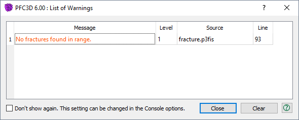

警告列表 对话框
如果在 选项对话框（Options dialog） 的 控制台 部分中勾选了“出现警告时弹出对话框”设置，则在发生警告时会显示此对话框。

图 1：警告列表 对话框。
表元素
- #
- 每条消息按出现顺序编号。
- 消息
- 所遇到的错误或警告的说明。
- 级别
- 警告的严重程度，从 0（最紧急）到 8（最不紧急）。
- 来源
- 消息的来源（如果有）。
- 线
- 错误发生处的行号（如果有）。
此对话框是在 i 控制台（Console） 窗格中输出控制台信息的一种替代方式，用于在程序运行期间查看出现的警告消息。其使用与否取决于用户首选项，如下所述。作为一种替代方式，它有两个优点。
- 当 控制台 窗格被隐藏、最小化或只是不在视野中时，该对话框可提供错误和警告输出（见下文“说明”）。
- 由于警告和错误会从输出流中被提取并发送到该对话框，因此当它们出现在 控制台 窗格中大量标准输出中间时，这些消息不太可能丢失或被漏看。
首选项
- 要阻止其出现：
- 取消勾选 选项 对话框 控制台选项（Console Options） 页面中的“出现警告时弹出对话框”复选框。（当勾选了“不再显示…”时，此操作是从 警告列表 对话框内部执行的。）
- 要设置“警告级别”：
- 在“弹出对话框”复选框旁的编辑框中输入一个值（0-8）。该对话框仅针对低于所给值的错误显示（即，“0”会显示所有错误，因为它是最低可能值；“4”会显示 0-3 级错误，依此类推）。
注意
此对话框可以在程序使用期间保持打开。如果它被关闭，则会在命令处理过程中出现下一个新的警告情况时重新打开。
| 这些内容对您有帮助吗？… | FLAC3D © 2019, Itasca | 原文更新于 2020 年 10 月 8 日 |